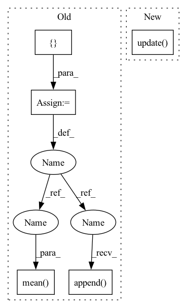

Pattern ID :8923
Before Change
num_batches = 0
current_epoch_losses = []
current_epoch_reg_losses = []
for inputs, targets in loader:
// Run forward calculation
predicted = self.model.forward(**inputs)
// Compute loss.
loss = self.loss_fn(predicted, targets)
current_epoch_losses.append(loss.data.item())
// Regularize.
loss, reg_loss = self._add_batch_regualarizations(loss, reg_lambda_ar)
current_epoch_reg_losses.append( reg_loss.data.item())
self.optimizer.zero_grad()
loss.backward()
self.optimizer.step()
num_batches += 1
self.scheduler.step()
epoch_loss = np.mean(current_epoch_losses)
epoch_reg = np.mean(current_epoch_reg_losses )
return epoch_loss, epoch_reg, num_batches
def _add_batch_regualarizations(self, loss, reg_lambda_ar):After Change
self.optimizer.step()
for metric in self.metrics:
metric.update(predicted=predicted, target=targets)
self.value_metrics["RegLoss"].update(avg_value=reg_loss, num=targets.shape[0])
self.scheduler.step()
for metric in self.metrics: metric.compute(save=True)In pattern: SUPERPATTERN
Frequency: 3
Non-data size: 5
Instances Fragment ID: 32731299
Project Name: ourownstory/neural_prophet
Commit Name: ea05689f7ccca059223f80c7bd85f8b7943e69d0
Time: 2020-06-16
Author: oskar.triebe@merantix.com
File Name: neuralprophet/neural_prophet.py
M Class Name: NeuralProphet
N Class Name: NeuralProphet
M Method Name: _train_epoch(3)
N Method Name: _train_epoch(3)
M Parent Class:
N Parent Class:
M File Name: neuralprophet/neural_prophet.py
N File Name: neuralprophet/neural_prophet.py
M Start Line: 322
M End Line: 345
N Start Line: 291
N End Line: 319
Before Change
paired_dataset = PairedDataset(dataset, embedding, shuffle=shuffle)
dataloader = DataLoader(paired_dataset, batch_size=batch_size)
embedding_tree = KDTree(embedding)
knn_r2 = []
if verbose:
dataloader = tqdm(dataloader)
for data, embedding_batch in dataloader:
data = data.numpy()
embedding_batch = embedding_batch.numpy()
knn_indices = embedding_tree.query(embedding_batch, k=k, return_distance=False)
knn_means = []
for i, point in enumerate(embedding_batch):
point_knn_indices = knn_indices[i]
knn_data = np.array([dataset[idx] for idx in point_knn_indices])
knn_means.append(np.mean(knn_data, axis=0))
knn_means = np.array(knn_means)
knn_r2.append( r2_score(data, knn_means))
return np.mean( knn_r2)
def linear_probe_reconstruction(
dataset,After Change
knn = np.mean(knn_data, axis=1)
knn_metric.append(metric.transform(data, knn))
if verbose:
prog_bar.update( 1)
return np.array(knn_metric)
def linear_probe_reconstruction( Fragment ID: 32731298
Project Name: jgraving/cne
Commit Name: 6d4f69204f6bbfa424a9dbd86eec6b16d90db078
Time: 2023-01-23
Author: jgraving@gmail.com
File Name: selfsne/eval.py
M Class Name: AnonimousClass
N Class Name: AnonimousClass
M Method Name: knn_probe_reconstruction(8)
N Method Name: knn_probe_reconstruction(6)
M Parent Class:
N Parent Class:
M File Name: selfsne/eval.py
N File Name: selfsne/eval.py
M Start Line: 104
M End Line: 120
N Start Line: 105
N End Line: 159
Before Change
self.train_config.est_sparsity, self.train_config.lambda_delay, e)
num_batches = 0
current_epoch_losses = []
current_epoch_reg_losses = []
for inputs, targets in loader:
// Run forward calculation
predicted = self.model.forward(**inputs)
// Compute loss.
loss = self.loss_fn(predicted, targets)
current_epoch_losses.append( loss.data.item())
// Regularize.
loss, reg_loss = self._add_batch_regualarizations(loss, reg_lambda_ar)
current_epoch_reg_losses.append(reg_loss.data.item())
self.optimizer.zero_grad()
loss.backward()
self.optimizer.step()
num_batches += 1
self.scheduler.step()
epoch_loss = np.mean( current_epoch_losses)
epoch_reg = np.mean(current_epoch_reg_losses)
return epoch_loss, epoch_reg, num_batches
After Change
for metric in self.metrics:
metric.update(predicted=predicted, target=targets)
self.value_metrics["RegLoss"].update(avg_value=reg_loss, num=targets.shape[0])
self.scheduler.step()
for metric in self.metrics: metric.compute(save=True)
for metric in self.value_metrics.values(): metric.compute(save=True) Fragment ID: 32731297
Project Name: ourownstory/neural_prophet
Commit Name: ea05689f7ccca059223f80c7bd85f8b7943e69d0
Time: 2020-06-16
Author: oskar.triebe@merantix.com
File Name: neuralprophet/neural_prophet.py
M Class Name: NeuralProphet
N Class Name: NeuralProphet
M Method Name: _train_epoch(3)
N Method Name: _train_epoch(3)
M Parent Class:
N Parent Class:
M File Name: neuralprophet/neural_prophet.py
N File Name: neuralprophet/neural_prophet.py
M Start Line: 322
M End Line: 345
N Start Line: 291
N End Line: 319